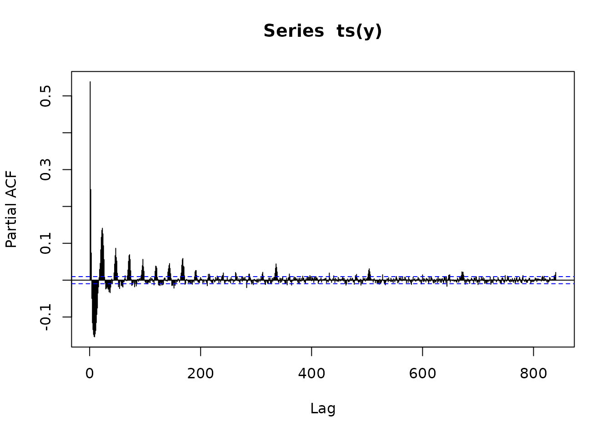
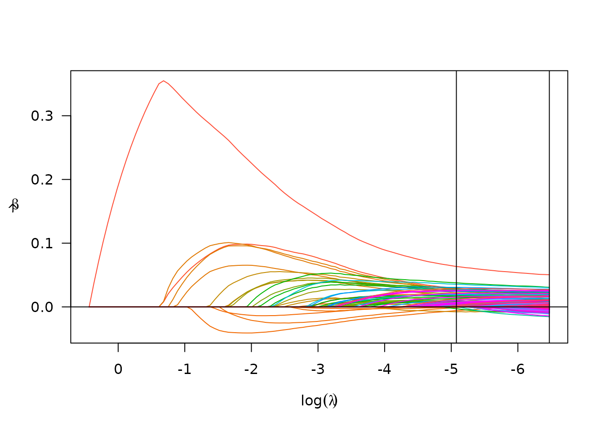
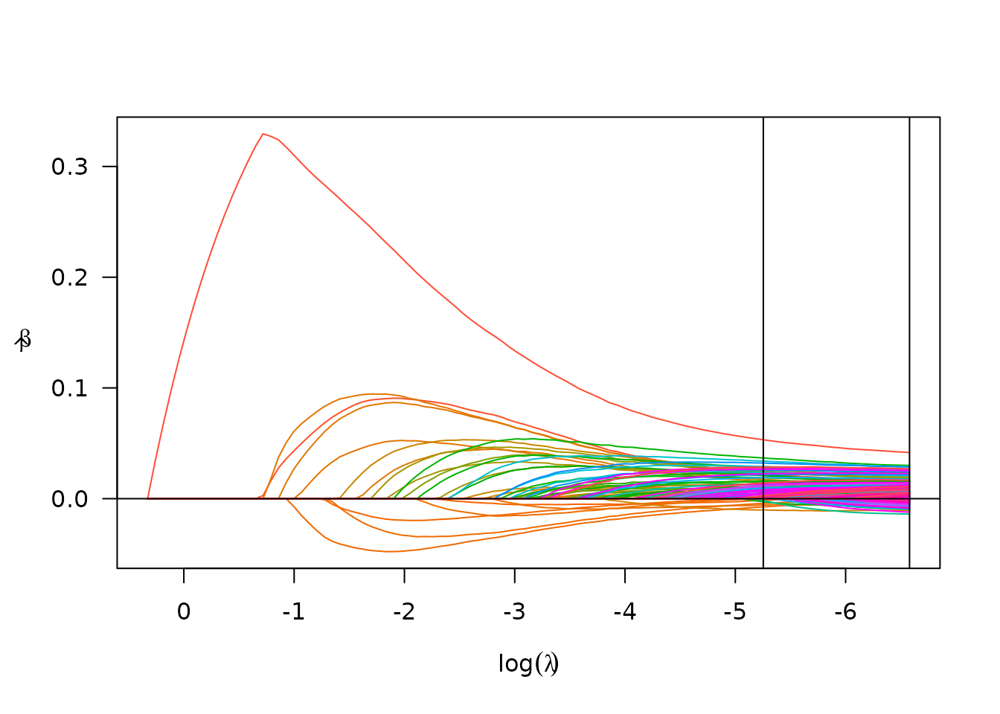
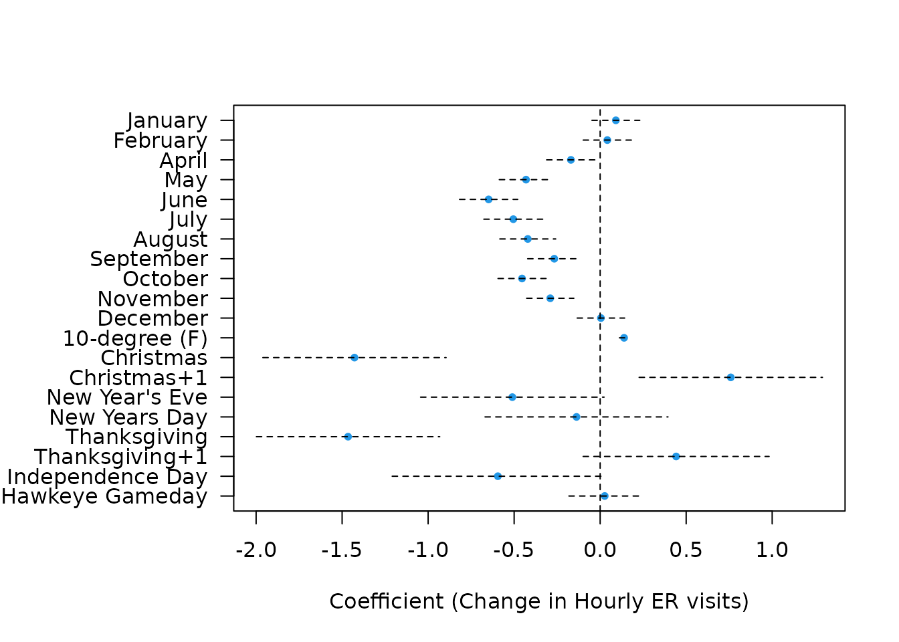

Time Series Modeling with Multiple Modes
Source:vignettes/hourly_er_visits.Rmd
hourly_er_visits.RmdThe uihc_ed_arrivals data set
The University of Iowa Hospitals and Clinics (UIHC) Emergency
Department Arrivals data set is included as a component of this package,
and consists of 41,640 hourly counts of number of new arrivals into the
ED spanning the years 2013-2018. See the data set documentation,
?uihc_ed_arrivals, for more information.
Modeling the data
Endogenous model (SRLPAC)
First we’ll load and summarize the data. Note that although we have plenty of information on year, month, and day, the data set has already been sorted by time.
data("uihc_ed_arrivals")
str(uihc_ed_arrivals)
#> 'data.frame': 41640 obs. of 17 variables:
#> $ Year : num 2013 2013 2013 2013 2013 ...
#> $ Quarter : Factor w/ 4 levels "Q1","Q2","Q3",..: 1 1 1 1 1 1 1 1 1 1 ...
#> $ Month : num 7 7 7 7 7 7 7 7 7 7 ...
#> $ Day : num 1 1 1 1 1 1 1 1 1 1 ...
#> $ Hour : num 0 1 2 3 4 5 6 7 8 9 ...
#> $ Arrivals: num 5 5 8 2 2 1 4 1 4 6 ...
#> $ Date : Date, format: "2013-07-01" "2013-07-01" ...
#> $ Weekday : Ord.factor w/ 7 levels "Sun"<"Mon"<"Tue"<..: 2 2 2 2 2 2 2 2 2 2 ...
#> $ temp : num 57 57 57 56 56 57 59 60 60 61 ...
#> $ xmas : num 0 0 0 0 0 0 0 0 0 0 ...
#> $ xmas2 : num 0 0 0 0 0 0 0 0 0 0 ...
#> $ nye : num 0 0 0 0 0 0 0 0 0 0 ...
#> $ nyd : num 0 0 0 0 0 0 0 0 0 0 ...
#> $ thx : num 0 0 0 0 0 0 0 0 0 0 ...
#> $ thx1 : num 0 0 0 0 0 0 0 0 0 0 ...
#> $ ind : num 0 0 0 0 0 0 0 0 0 0 ...
#> $ game_day: num 0 0 0 0 0 0 0 0 0 0 ...Let’s pull out our outcome and look at it.
y <- uihc_ed_arrivals$Arrivals
plot(y, type = "l")OK, not too helpful visually. Such is the trap of being so close to asymptopia. Let’s look a bit closer at the partial autocorrelation function to see what kind of seasonality and autoregressive (AR) structure we could be dealing with.
# number of maximum lags to consider
n_lags_max <- 24*7*5 # consider 5 weeks' data lags
pacfs <- pacf(ts(y), lag.max = n_lags_max, plot = F)
plot(pacfs)
Clearly we have multiple modes of seasonality in this hourly data, likely corresponding to observed shift-based, daily, and weekly patterns. Thankfully the sparsity ranked lasso (SRL) time series fitting procedure can handle this situation in stride.
We can fit an endogenous SRLPAC model using one line of code which might take 1-2 minutes to run:
srlpac <- fastTS(y, n_lags_max = n_lags_max, ptrain = 0.9)We can investigate the performance of the SRLPAC model using
associated print, coef, summary,
and plot functions.
srlpac
#> An endogenous PACF-based fastTS model.
#>
#> PF_gamma AICc_d BIC_d
#> 0.00 73.99 292.98
#> 0.25 11.63 20.55
#> 0.50 *0* *0*
#> 1.00 345.67 80.13
#> 2.00 2719.38 2139.19
#> 4.00 8347.84 7640.05
#> 8.00 15920.25 15152.91
#> 16.00 15920.25 15152.91
#>
#> AICc_d and BIC_d are the difference from the minimum; *0* is best.
#>
#> - Best AICc model: 167 active terms
#> - Best BIC model: 68 active terms
#>
#> Test-set prediction accuracy (10% held-out test set)
#> rmse rsq mae
#> AICc 2.651049 0.5276457 2.050730
#> BIC 2.656269 0.5257839 2.057091By default, fastTS used 8 possible tuning parameters for
,
the penalty weight exponent, and using AICc as a judge it appears the
best value is 0.5. By default, the argument p_train is set
to 0.8, which means we also get prediction accuracy for a left-out 20%
of the data, and revealing an R-squared of 53.1%, meaning that about
half of the variance in hourly visits to the ED can be explained by
multi-modal seasonal and local autoregressive patterns.
The lasso’s solution path for these lags can be seen via the
plot function.
plot(srlpac)
To see the (long) list of selected coefficients, the
summary function can be used.
Expand to see output
summary(srlpac)
#> Model summary (ncvreg) at optimal AICc (lambda=0.0017; gamma=0.5)
#> lasso-penalized linear regression with n=36636, p=840
#> At lambda=0.0017:
#> -------------------------------------------------
#> Nonzero coefficients : 166
#> Expected nonzero coefficients: 89.94
#> Average mfdr (166 features) : 0.542
#>
#> Estimate z mfdr Selected
#> lag1 4.832e-02 13.8334 < 1e-04 *
#> lag168 3.128e-02 9.3035 < 1e-04 *
#> lag336 2.913e-02 8.8062 < 1e-04 *
#> lag504 2.838e-02 8.7034 < 1e-04 *
#> lag840 2.611e-02 8.2193 < 1e-04 *
#> lag672 2.614e-02 8.1720 < 1e-04 *
#> lag337 2.578e-02 7.9079 < 1e-04 *
#> lag671 2.497e-02 7.8255 < 1e-04 *
#> lag503 2.419e-02 7.5314 < 1e-04 *
#> lag170 2.394e-02 7.3430 < 1e-04 *
#> lag167 2.374e-02 7.1869 < 1e-04 *
#> lag673 2.212e-02 7.0841 < 1e-04 *
#> lag47 2.285e-02 6.8408 < 1e-04 *
#> lag505 2.088e-02 6.6926 < 1e-04 *
#> lag335 2.142e-02 6.6878 < 1e-04 *
#> lag2 2.233e-02 6.5631 < 1e-04 *
#> lag72 2.081e-02 6.3162 < 1e-04 *
#> lag3 2.046e-02 6.2389 < 1e-04 *
#> lag96 2.016e-02 6.1570 < 1e-04 *
#> lag432 1.813e-02 5.9159 < 1e-04 *
#> lag73 1.816e-02 5.6173 < 1e-04 *
#> lag144 1.777e-02 5.5418 < 1e-04 *
#> lag839 1.594e-02 5.5196 < 1e-04 *
#> lag23 1.807e-02 5.4146 < 1e-04 *
#> lag169 1.695e-02 5.3612 < 1e-04 *
#> lag166 1.578e-02 5.0024 0.00013304 *
#> lag24 1.646e-02 4.9811 0.00014421 *
#> lag647 1.399e-02 4.8894 0.00020612 *
#> lag192 1.481e-02 4.8607 0.00023170 *
#> lag528 1.313e-02 4.7248 0.00041199 *
#> lag25 1.499e-02 4.6212 0.00064414 *
#> lag600 1.243e-02 4.4974 0.00109781 *
#> lag190 1.329e-02 4.4680 0.00124702 *
#> lag22 1.469e-02 4.4586 0.00129820 *
#> lag71 1.370e-02 4.3025 0.00250449 *
#> lag338 1.237e-02 4.2944 0.00258411 *
#> lag674 1.076e-02 4.0905 0.00507800 *
#> lag283 -1.279e-02 -4.4935 0.00550651 *
#> lag191 1.188e-02 4.0510 0.00566295 *
#> lag312 1.143e-02 3.9938 0.00662490 *
#> lag648 1.017e-02 3.9094 0.00847559 *
#> lag838 9.762e-03 3.8902 0.00900218 *
#> lag481 1.064e-02 3.8646 0.00978850 *
#> lag241 1.064e-02 3.7938 0.01257043 *
#> lag263 1.062e-02 3.7646 0.01404710 *
#> lag670 9.846e-03 3.7290 0.01619361 *
#> lag143 1.117e-02 3.7159 0.01710427 *
#> lag649 9.386e-03 3.6818 0.01973798 *
#> lag644 -1.142e-02 -4.1916 0.02004784 *
#> lag696 8.329e-03 3.6545 0.02218302 *
#> lag360 8.925e-03 3.4680 0.04644124 *
#> lag502 9.070e-03 3.4593 0.04782684 *
#> lag506 8.383e-03 3.4020 0.05656526 *
#> lag462 -9.032e-03 -3.5147 0.07544922 *
#> lag212 -8.826e-03 -3.4942 0.07740615 *
#> lag700 -8.677e-03 -3.4654 0.08102706 *
#> lag4 9.476e-03 3.2218 0.08513626 *
#> lag770 7.547e-03 3.1949 0.09050678 *
#> lag288 8.157e-03 3.1730 0.09545128 *
#> lag6 9.919e-03 3.1411 0.10355275 *
#> lag119 9.133e-03 3.1349 0.10529360 *
#> lag317 -8.195e-03 -3.3438 0.10827871 *
#> lag26 9.165e-03 3.0991 0.11650038 *
#> lag480 7.304e-03 3.0785 0.12392532 *
#> lag816 6.479e-03 3.0524 0.13488996 *
#> lag685 -6.883e-03 -3.2704 0.13679117 *
#> lag533 -7.910e-03 -3.2636 0.13999713 *
#> lag817 6.235e-03 3.0378 0.14150660 *
#> lag7 9.577e-03 3.0323 0.14425271 *
#> lag214 7.360e-03 2.9473 0.19878897 *
#> lag116 -7.533e-03 -3.1542 0.20217850 *
#> lag121 7.902e-03 2.8451 0.30811774 *
#> lag489 -7.001e-03 -2.9682 0.31653617 *
#> lag142 7.690e-03 2.7934 0.38793357 *
#> lag46 8.362e-03 2.7916 0.39102237 *
#> lag152 -7.118e-03 -2.8179 0.40070823 *
#> lag334 6.960e-03 2.7827 0.40662249 *
#> lag580 -5.584e-03 -2.7634 0.44275684 *
#> lag37 -7.508e-03 -2.7583 0.44745188 *
#> lag520 -5.889e-03 -2.7571 0.44849840 *
#> lag316 -5.746e-03 -2.7312 0.47297615 *
#> lag491 -4.946e-03 -2.6593 0.55827411 *
#> lag322 -5.256e-03 -2.6354 0.59201104 *
#> lag463 -5.281e-03 -2.5134 0.79196750 *
#> lag522 -4.762e-03 -2.4968 0.82077437 *
#> lag440 5.086e-03 2.5291 0.87977536 *
#> lag84 -2.297e-04 -0.9457 0.93033976 *
#> lag14 -3.126e-04 -0.5388 0.93880351 *
#> lag54 -9.170e-04 -1.0496 0.95233277 *
#> lag145 6.216e-03 2.4024 0.97682050 *
#> lag697 3.706e-03 2.3890 0.98385342 *
#> lag8 5.377e-03 1.8417 1.00000000 *
#> lag10 4.209e-03 1.5186 1.00000000 *
#> lag13 1.100e-03 0.7079 1.00000000 *
#> lag15 8.068e-04 0.8520 1.00000000 *
#> lag18 2.555e-03 1.3921 1.00000000 *
#> lag21 5.752e-03 1.9600 1.00000000 *
#> lag34 1.044e-04 0.8149 1.00000000 *
#> lag52 -3.382e-03 -1.8283 1.00000000 *
#> lag55 1.327e-04 2.3267 1.00000000 *
#> lag64 1.444e-03 1.6590 1.00000000 *
#> lag70 5.290e-03 1.9913 1.00000000 *
#> lag74 3.526e-03 1.6954 1.00000000 *
#> lag76 -4.207e-03 -2.1447 1.00000000 *
#> lag95 5.916e-04 0.7312 1.00000000 *
#> lag97 3.450e-03 1.5648 1.00000000 *
#> lag120 5.638e-03 2.1829 1.00000000 *
#> lag133 -6.336e-04 -1.3573 1.00000000 *
#> lag141 5.578e-03 2.2978 1.00000000 *
#> lag148 -3.279e-03 -1.9375 1.00000000 *
#> lag149 -1.272e-03 -1.3516 1.00000000 *
#> lag150 -4.134e-03 -2.0763 1.00000000 *
#> lag154 -2.606e-03 -1.6541 1.00000000 *
#> lag172 -4.161e-03 -2.2711 1.00000000 *
#> lag185 -1.227e-03 -1.4276 1.00000000 *
#> lag193 1.638e-03 1.4142 1.00000000 *
#> lag216 2.812e-03 1.7056 1.00000000 *
#> lag239 1.924e-03 1.4977 1.00000000 *
#> lag255 4.054e-04 1.3612 1.00000000 *
#> lag264 1.282e-03 1.2839 1.00000000 *
#> lag266 6.112e-04 1.2681 1.00000000 *
#> lag287 3.561e-03 1.9931 1.00000000 *
#> lag311 3.634e-03 1.9446 1.00000000 *
#> lag315 -7.311e-04 -1.5680 1.00000000 *
#> lag354 -3.043e-04 -1.3601 1.00000000 *
#> lag356 -3.593e-03 -2.0771 1.00000000 *
#> lag378 -1.041e-03 -1.5192 1.00000000 *
#> lag384 2.089e-03 1.7697 1.00000000 *
#> lag397 3.425e-03 2.0249 1.00000000 *
#> lag399 8.276e-04 1.4562 1.00000000 *
#> lag406 2.982e-03 2.0384 1.00000000 *
#> lag408 2.958e-03 1.9697 1.00000000 *
#> lag461 -1.379e-03 -1.5807 1.00000000 *
#> lag477 -3.551e-03 -2.1067 1.00000000 *
#> lag479 4.055e-03 2.1982 1.00000000 *
#> lag492 -1.684e-03 -1.9215 1.00000000 *
#> lag515 -1.421e-03 -1.7696 1.00000000 *
#> lag518 -3.009e-03 -2.0826 1.00000000 *
#> lag519 -1.245e-03 -1.7359 1.00000000 *
#> lag524 -1.837e-03 -1.6917 1.00000000 *
#> lag532 -3.848e-03 -2.1992 1.00000000 *
#> lag547 -1.769e-03 -1.8280 1.00000000 *
#> lag553 4.045e-04 1.5840 1.00000000 *
#> lag568 1.031e-04 1.2304 1.00000000 *
#> lag579 -2.218e-03 -1.7556 1.00000000 *
#> lag611 -3.447e-03 -2.2112 1.00000000 *
#> lag615 4.221e-03 2.2616 1.00000000 *
#> lag643 8.495e-04 1.3665 1.00000000 *
#> lag660 -1.451e-03 -1.9181 1.00000000 *
#> lag677 -4.081e-03 -2.3519 1.00000000 *
#> lag712 -2.749e-03 -1.9713 1.00000000 *
#> lag716 -2.516e-03 -2.0212 1.00000000 *
#> lag722 2.626e-03 2.0303 1.00000000 *
#> lag723 -1.057e-03 -1.5367 1.00000000 *
#> lag724 -7.890e-04 -1.6821 1.00000000 *
#> lag727 -2.050e-03 -1.7763 1.00000000 *
#> lag733 -8.095e-04 -1.7718 1.00000000 *
#> lag744 2.234e-03 2.0510 1.00000000 *
#> lag747 -4.722e-04 -1.5162 1.00000000 *
#> lag749 4.085e-04 1.1317 1.00000000 *
#> lag753 1.922e-03 1.6696 1.00000000 *
#> lag769 9.107e-05 1.4103 1.00000000 *
#> lag779 -2.768e-03 -2.1869 1.00000000 *
#> lag781 2.550e-03 1.7091 1.00000000 *
#> lag792 3.355e-03 2.3111 1.00000000 *
#> lag819 2.919e-03 1.8711 1.00000000 *Exogenous model (SRLPACx)
It’s slightly more work to add exogenous features, which might help us add in fixed effects of weekday, temperature, and holiday indicators. The extra work is setting up the matrix of exogenous features.
X_day <- as.matrix(dplyr::select(uihc_ed_arrivals, xmas:game_day))
X_month <- model.matrix(~relevel(factor(Month), ref = 3) + I(temp/10),
data = uihc_ed_arrivals)[,-1]
X <- cbind(X_month, X_day)
colnames(X) <- gsub("relevel.factor.Month., ref = 3.", "Month", colnames(X))
head(X)
#> Month1 Month2 Month4 Month5 Month6 Month7 Month8 Month9 Month10 Month11
#> 1 0 0 0 0 0 1 0 0 0 0
#> 2 0 0 0 0 0 1 0 0 0 0
#> 3 0 0 0 0 0 1 0 0 0 0
#> 4 0 0 0 0 0 1 0 0 0 0
#> 5 0 0 0 0 0 1 0 0 0 0
#> 6 0 0 0 0 0 1 0 0 0 0
#> Month12 I(temp/10) xmas xmas2 nye nyd thx thx1 ind game_day
#> 1 0 5.7 0 0 0 0 0 0 0 0
#> 2 0 5.7 0 0 0 0 0 0 0 0
#> 3 0 5.7 0 0 0 0 0 0 0 0
#> 4 0 5.6 0 0 0 0 0 0 0 0
#> 5 0 5.6 0 0 0 0 0 0 0 0
#> 6 0 5.7 0 0 0 0 0 0 0 0The result is a model matrix with month indicators (reference is
March), a scaled temperature covariate, and holiday indicator variables.
Now that we have our matrix of exogenous features, we can pass this to
fastTS to get our SRLPACx model. We also set
w_exo="unpenalized" which will allow us to conduct
statistical inference on the exogenous variable coefficients (by
default, they will be penalized using adaptive-lasso-style penalty
weights, which makes formal inference more difficult).
srlpacx <- fastTS(y, X=X, n_lags_max = n_lags_max, w_exo = "unpenalized", ptrain = .9)The same S3 methods apply and can be used to investigate the performance of the SLRPACx model.
srlpacx
#> A PACF-based fastTS model with 20 exogenous features.
#>
#> PF_gamma AICc_d BIC_d
#> 0.00 79.07 226.06
#> 0.25 29.1 9.74
#> 0.50 *0* *0*
#> 1.00 347.06 48.11
#> 2.00 2618.52 1988.01
#> 4.00 7966.17 7208.09
#> 8.00 15351.43 14533.81
#> 16.00 15351.43 14533.81
#>
#> AICc_d and BIC_d are the difference from the minimum; *0* is best.
#>
#> - Best AICc model: 212 active terms
#> - Best BIC model: 97 active terms
#>
#> Test-set prediction accuracy (10% held-out test set)
#> rmse rsq mae
#> AICc 2.645336 0.5296794 2.045353
#> BIC 2.648096 0.5286975 2.048818Again, fastTS used 8 possible tuning parameters for
,
and it appears the best value is 0.5. The addition of exogenous features
has slightly improved the prediction accuracy on the left-out test data,
with an R-squared of 53.3%. This may appear to be a very small increase,
but it could add up (as we will see shortly) when predictions are made
multiple steps ahead, or when the cumulative sum of predictions is of
interest.
The lasso’s solution path for these lags can be seen via the
plot function.
plot(srlpacx)
To see the (long) list of selected coefficients, the
summary function can be used. In this case, we’re most
interested in the exogenous features, which can be extracted via the
unpenTable object in the results returned from
summary (this is thanks in large part to the
ncvreg package).
s <- summary(srlpacx)
s$unpenTable | Estimate | std.error | statistic | p.value | |
|---|---|---|---|---|
| Month1 | 0.09 | 0.07 | 1.32 | 0.19 |
| Month2 | 0.04 | 0.07 | 0.60 | 0.55 |
| Month4 | -0.18 | 0.07 | -2.58 | 0.010 |
| Month5 | -0.44 | 0.07 | -5.97 | < 0.001 |
| Month6 | -0.63 | 0.08 | -7.78 | < 0.001 |
| Month7 | -0.50 | 0.08 | -6.10 | < 0.001 |
| Month8 | -0.41 | 0.08 | -5.23 | < 0.001 |
| Month9 | -0.30 | 0.08 | -3.94 | < 0.001 |
| Month10 | -0.45 | 0.07 | -6.35 | < 0.001 |
| Month11 | -0.29 | 0.07 | -4.13 | < 0.001 |
| Month12 | 0.01 | 0.07 | 0.10 | 0.92 |
| I(temp/10) | 0.14 | 0.01 | 10.47 | < 0.001 |
| xmas | -1.45 | 0.27 | -5.33 | < 0.001 |
| xmas2 | 0.74 | 0.27 | 2.73 | 0.006 |
| nye | -0.51 | 0.27 | -1.86 | 0.064 |
| nyd | -0.12 | 0.27 | -0.45 | 0.65 |
| thx | -1.48 | 0.27 | -5.44 | < 0.001 |
| thx1 | 0.43 | 0.28 | 1.57 | 0.12 |
| ind | -0.75 | 0.27 | -2.77 | 0.006 |
| game_day | 0.01 | 0.10 | 0.09 | 0.92 |
Or we can make a nice looking figure.
b <- s$unpenTable[,1]
se_b <- s$unpenTable[,2]
ci_lb <- b - se_b * 1.96
ci_ub <- b + se_b * 1.96
old <- par(mar = c(5,9,4,2) + .1)
plot(b, length(se_b):1, xlim = range(ci_lb, ci_ub), pch = 20,
col = 4, yaxt = "n", ylab = "", xlab = "Coefficient (Change in Hourly ER visits)")
abline(v = 0, lty = 2)
segments(x0 = ci_lb, x1 = ci_ub, y0 = length(se_b):1, lty = 2)
labs <- gsub("factor\\(Month\\)", "", names(b))
labs <- c(month.name[-3], "10-degree (F)", "Christmas", "Christmas+1",
"New Year's Eve", "New Years Day",
"Thanksgiving", "Thanksgiving+1", "Independence Day",
"Hawkeye Gameday")
axis(2, length(se_b):1, labs, las = 2)
par(old)Making predictions
For time series models such as the ones we fit with SRLPAC, it is straightforward to get 1-step-ahead predictions. By default, these predictions will include both in-sample and out-of-sample (test set) predictions; see below for how to delineate between these two.
k-step ahead predictions
It’s a bit more involved of a process to get 2, 3, or -step ahead predictions computationally, as the the 1-step through -step predictions must be computed iteratively in order to get -step ahead predictions. From a user’s perspective, it’s still straightforward though.
p_2step_endo <- predict(srlpac, n_ahead = 2)
p_2step_exo <- predict(srlpacx, n_ahead = 2)
p_10step_endo <- predict(srlpac, n_ahead = 10)
p_10step_exo <- predict(srlpacx, n_ahead = 10)
preds <- cbind(p_1step_endo, p_2step_endo, p_10step_endo,
p_1step_exo, p_2step_exo, p_10step_exo)
cor(preds, use = "pairwise")
#> p_1step_endo p_2step_endo p_10step_endo p_1step_exo p_2step_exo
#> p_1step_endo 1.0000000 0.9990044 0.9983291 0.9971924 0.9962132
#> p_2step_endo 0.9990044 1.0000000 0.9993251 0.9962292 0.9969484
#> p_10step_endo 0.9983291 0.9993251 1.0000000 0.9955017 0.9962196
#> p_1step_exo 0.9971924 0.9962292 0.9955017 1.0000000 0.9992707
#> p_2step_exo 0.9962132 0.9969484 0.9962196 0.9992707 1.0000000
#> p_10step_exo 0.9956397 0.9963593 0.9965418 0.9989497 0.9996771
#> p_10step_exo
#> p_1step_endo 0.9956397
#> p_2step_endo 0.9963593
#> p_10step_endo 0.9965418
#> p_1step_exo 0.9989497
#> p_2step_exo 0.9996771
#> p_10step_exo 1.0000000Evidently (and as expected) these predictions are all very highly correlated with each other. Note that there are going to be missing (NA) values at the front end of the prediction vector, since some observations are eaten up by lags in the fitting procedure.
Cumulative predictions
From an applied perspective, it’s not very useful to predict how many
visits an ED might see in the next hour, or in the next 10 hours. It’s
much more useful to be able to predict how many patients might come in
in a given 10 hour (shift-length) period. The
predict.fastTS function provides some functionality for
-step
ahead cumulative (rolling sum) predictions via the
cumulative argument.
Let’s calculate 10-hour rolling sum predictions using the 1-10 step ahead predictions using both models.
y_c10hr <- RcppRoll::roll_sum(y, 10, align = "right", fill = NA)
p_10step_csum_endo <- predict(srlpac, n_ahead = 10, cumulative = TRUE)
p_10step_csum_exo <- predict(srlpacx, n_ahead = 10, cumulative = TRUE)We can compute mean absolute error (MAE) (and other similar metrics)
using the functionality from the yardstick package.
mae_vec(y_c10hr, p_10step_csum_endo)
#> [1] 6.99226
mae_vec(y_c10hr, p_10step_csum_exo)
#> [1] 6.88724So the SRLPAC(x) methods were able to predict the number of patients who arrive in a given 10-hour window to within an average of about 6.9 patients.
It may be pertinent to investigate this predictive accuracy only on
the test data set, which can be done by extracting the
train_idx object from the fastTS object.
mae_vec(y_c10hr[-srlpac$train_idx], p_10step_csum_endo[-srlpac$train_idx])
#> [1] 7.239172
mae_vec(y_c10hr[-srlpacx$train_idx], p_10step_csum_exo[-srlpacx$train_idx])
#> [1] 7.154257We can also compute the overall R-squared:
rsq_vec(y_c10hr, p_10step_csum_endo)
#> [1] 0.8449232
rsq_vec(y_c10hr, p_10step_csum_exo)
#> [1] 0.8510801And the R-squared just for the test data.
rsq_vec(y_c10hr[-srlpac$train_idx], p_10step_csum_endo[-srlpac$train_idx])
#> [1] 0.8326353
rsq_vec(y_c10hr[-srlpacx$train_idx], p_10step_csum_exo[-srlpacx$train_idx])
#> [1] 0.8382712It’s interesting that R-squared increases as the horizon for the cumulative predictions increases: it’s about 0.8 for the 10-hour cumulative predictions yet only about 0.53 for the standard 1-step predictions. It seems to imply some predictive gains in the process of aggregating to longer periods of time. More investigation may be warranted here.
Conclusions
In ongoing work we are comparing the SRL-based approaches to other competing approaches.